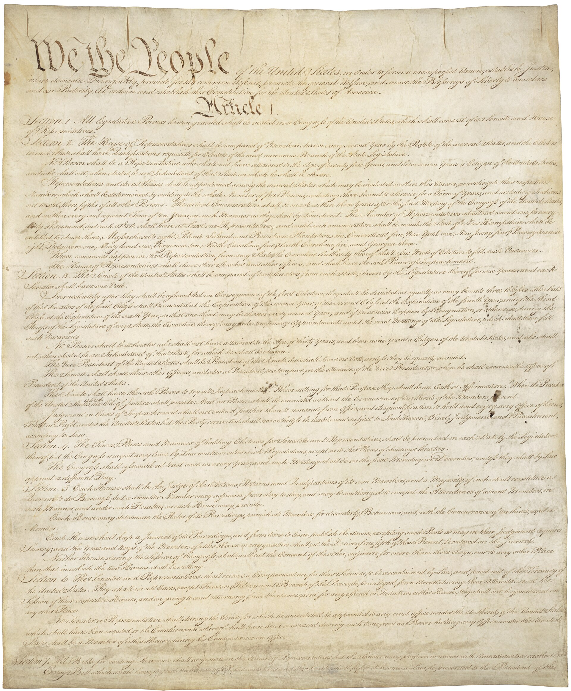

Directions: Read the Preamble, then answer the questions.

The Preamble, entire. "We the People of the United States, in Order to form a more perfect Union, establish Justice, insure domestic Tranquility, provide for the common defence, promote the general Welfare, and secure the Blessings of Liberty to ourselves and our Posterity, do ordain and establish this Constitution for the United States of America."
Source: Framers of the Constitution, "Constitution, Preamble," 1787 (National Archives), as carried in the audited Primary Source Project bank record.
1. State the claim the Preamble's first six words make about where the government's authority comes from, and name the body of people it says performed the act of ordaining and establishing. Then state how the Articles of Confederation had opened instead.
2. List the six purposes the Preamble names for establishing the Constitution, in the document's own order.
3. Work the count the Preamble's government would use. A state holds 300,000 free persons and 200,000 enslaved people. Show the number on which its House seats rest, and state whose votes, if any, the added number represents.
4. Put the summer in sequence. Give the date the Convention organized, the date and margin of the vote adopting the Great Compromise, the date George Mason moved for a bill of rights and its result, and the date and signing count of the close.
1. State the Preamble's claim, the actor it names, and the Articles' different opening. The first six words, We the People of the United States, claim that the government's authority comes from the people themselves, and the sentence says the people performed the act: we do ordain and establish this Constitution. The authority is not lent by the state governments. The Articles of Confederation had opened with a list of the thirteen states by name, a league of states as parties. The Preamble names no state. (Blueprint 13)
2. List the six purposes in order. To form a more perfect Union; establish Justice; insure domestic Tranquility; provide for the common defence; promote the general Welfare; and secure the Blessings of Liberty to ourselves and our Posterity. All six, in order, for full credit. The Preamble grants no powers by itself; it states the purposes the powers that follow were built to serve. (Blueprint 13)
3. Work the count and state whose votes the added number represents. 300,000 + (200,000 x 3/5) = 300,000 + 120,000 = 420,000. The added 120,000 represents no votes at all. The 200,000 enslaved people counted toward it could not vote, hold office, or leave; their count raised the seats and the electoral weight of the state that held them. (Blueprint 14)
4. Put the summer in sequence, with dates, the margin, the motion's result, and the signing count. The Convention organized on May 25, 1787, once seven states were present. The Great Compromise was adopted on July 16, 1787, by five states to four. On September 12, 1787 George Mason moved that a committee prepare a bill of rights, and the Convention refused with no state voting in favor. The Convention closed on September 17, 1787, when thirty nine delegates signed and three, Mason, Gerry, and Randolph, declined. (Blueprint 13, 14)
Teacher note. This check is formative. Questions 1 and 2 carry blueprint entry 13 and test whether students can read the Preamble as a claim about authority, not a decoration. Questions 3 and 4 carry blueprint entry 14. A student who cannot run the three fifths arithmetic, or who assigns the added count to voters, has not yet understood the compromise the unit test will price. A student who places the bill of rights refusal after the signing has the close backwards: the refusal of September 12 is what Mason, Gerry, and Randolph carried into their refusal to sign on September 17.